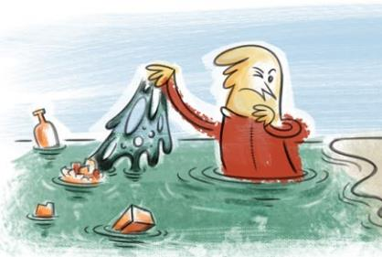
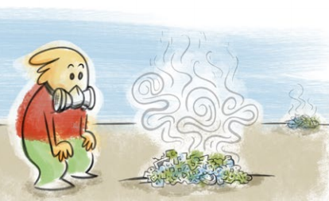
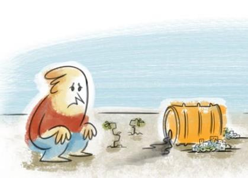

Contaminación del agua: En los sitios de disposición final que no se cuentan con una capa impermeable que proteja el suelo y lo aísle de los líquidos percolados provenientes de la descomposición y compresión de los residuos, estos líquidos se lixivian o filtran a través del suelo, contaminándolo, pudiendo llegar incluso a las napas de agua subterránea. Asimismo, se contamina el agua, por el arrastre de desechos que traen los ríos, depositándolos en lagos y/o en los océanos.

Contaminación del aire: Cuando se concentran grandes cantidades de residuos en un sitio, con el paso del tiempo comienzan a descomponerse lentamente y con baja o nula presencia de oxígeno, generan emanaciones de gases contaminantes, causando malos olores. Estas emisiones pueden ser controladas y captadas con sistemas de recuperación de gases, sin embargo, estos sistemas no están instalados en los vertederos o basurales, solo en rellenos sanitarios.

Degradación de los suelos: El suelo puede verse afectado por la acumulación de residuos de distinta naturaleza, los que combinados generan sustancias contaminantes que pueden alterar las propiedades físicas y químicas del suelo; reduciendo su fertilidad, su capacidad de aireación, su capacidad de retención de agua, y su porosidad. Además, la acumulación de residuos de manera inapropiada en lugares no autorizados puede aumentar el riesgo de incendios.

Alteración de los ecosistemas: Los ecosistemas se ven afectados cuando su capacidad de carga y de regeneración se ve sobrepasada. Si a esto se le suma la acumulación de residuos de manera descontrolada, se generan afectaciones en los hábitats, pudiendo incluso alterar significativamente los ecosistemas y las especies que los componen. Un ejemplo de esto son los residuos que arrastran las mareas, que se dispersan por las playas, viajan en suspensión por el mar y se acumulan en el fondo marino, afectando la vida y las cadenas tróficas